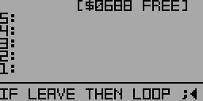

Example:
First, define a new word FOO with a DO loop:
: FOO 0 8 1 DO I + I 4 = IF LEAVE THEN LOOP ;
Defining FOO (partial view)
FOO pushes a 0 on the stack to use as a counter. DO iterates from 1 to 7. I + adds the loop value to the counter on the stack. I 4 = compares the loop value to 4, and when it's equal, LEAVE exits the loop. As a result, FOO sums the values from 1 to 4 and exits the loop without summing 5, 6, or 7.